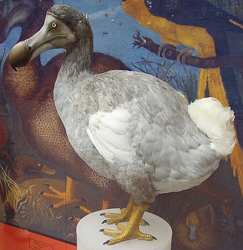
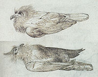
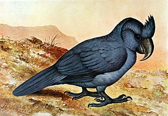

Мавркикийский дронт
 Первое документальное упоминание о дронте появилось благодаря голландским мореплавателям, прибывшим на остров в 1598 году. С появлением человека птица часто становилась жертвой как голодных моряков, так и их домашних животных, а также других интродуцированных видов. Исчезновение было замечено не сразу, и многие натуралисты долгое время считали додо мифическим существом, пока в 40-х годах XIX века не было проведено исследование сохранившихся останков особей, привезённых в Европу ещё в начале XVII века.Как и многие другие животные, которые развивались в изоляции от серьёзных хищников, людей дронты совсем не боялись. Это отсутствие страха и неспособность летать сделали птицу лёгкой добычей для моряков. Хотя отдельные сообщения и описывали массовый убой додо ради пополнения корабельных припасов, археологические исследования на месте исторического поселения не нашли весомых доказательств хищничества людей.
Хоть люди и представляли опасность для додо, но они еще и завезли других животных, включая собак, свиней, кошек, крыс и макак-крабоедов, которые разоряли гнёзда дронтов и соперничали за ограниченные пищевые ресурсы. Одновременно, люди и завезённый скот уничтожали лесную среду обитания додо. Вокруг даты исчезновения додо существуют разногласия. Последним широко признанным сообщением о наблюдении дронтов является донесение от матроса Волькерта Эвертса с потерпевшего кораблекрушение голландского судна «Арнхем», датируемое 1662 годом. Он описал птиц, пойманных на небольшом островке недалеко от Маврикия (как сейчас предполагается, на острове Янтарном:
Эти животные при нашем приближении замирали, глядя на нас, и спокойно оставались на месте, будто им было
невдомёк, есть ли у них крылья, чтобы улететь, или ноги, чтобы убежать, и дозволяя нам приблизиться к ним
настолько близко, насколько мы хотели. Среди этих птиц были те, которых в Индии называют Dod-aersen
(это вид очень крупных гусей); эти птицы не умеют летать, вместо крыльев у них просто небольшие отростки,
зато они могут очень быстро бегать. Мы согнали их всех в одно место так, что можно было поймать их руками,
а когда схватили одну из них за ногу, та подняла такой шум, что тут же ей на выручку сбежались все остальные
и в итоге сами тоже были переловлены.
В отчёте английского путешественника Джона Маршалла 1668 года, который поочерёдно использовал названия Dodo и Red Hen («рыжая курица») для обозначения рыжего маврикийского пастушка, упоминается о том, что мясо птицы было «жёстким» и это перекликается с сообщением «о мясе» 1681 года.
Хотя о редкости додо сообщалось уже в XVII веке, его исчезновение не признавалось вплоть до XIX века. Отчасти по религиозным причинам, так как вымирание считалось невозможным (пока противоположное не доказал Жорж Кювье), а отчасти из-за того, что многие учёные сомневались, что дронты когда-либо существовали. Итак, что самые первые упоминания о данном виде сделаны в 1598 году, а самые последние – 1801 году. Таким образом можно сделать вывод, что вид исчез примерно за 200 лет. Впервые эту птицу в качестве примера вымирания вследствие деятельности человека привёл в 1833 году британский журнал «The Penny Magazine».
Маврикийсий синий голубь

Первые рисунки голубей, оставленные в судовом журнале корабля «Гелдерланд», 1601
Эта птица вымерла в первой трети XIX века (в 1830-х годах) в результате истребления и вырубки лесов — природных мест обитания.
Сохранилось несколько документов, созданных наблюдателями живой птицы — рисунков и описаний, а также три шкурки,
в настоящее время хранящиеся в музейных коллекциях в Париже, Эдинбурге и Порт-Луи. Первые рисунки голубей, оставленные в судовом журнале корабля «Гелдерланд», 1601
Наиболее ранним документом, в котором можно найти подтверждение знакомства человека с маврикийским синим голубем, считаются два карандашных рисунка 1601 года, на которых изображены мёртвые (по всей видимости, убитые человеком) птицы. Чуть более развёрнутая информация об этой и других птицах представлена в переписке между военным инженером и членом-корреспондентом Французской академии наук Жаном-Франсуа Шарпентье де Коссиньи и известным парижским учёным Рене Реомюром. В одном из писем, написанном в 1755 году, к тому времени уже проживший 23 года на острове Коссиньи признаётся, что маврикийский голубь стал очень редкой птицей. В качестве причин исчезновения он назвал вырубку леса и охоту на них беглых рабов.
Маврикийский чубатый попугай
Следующее описание Якоба Гранета 1666 года указывает на лесную среду обитания и возможно на поведение птицы:
«В лесу обитают попугаи, черепахи и другие дикие голуби, озорные и необычайно большие вороны (чубатые попугаи),
соколы, летучие мыши и другие птицы, названия которых я не знаю, поскольку никогда не видел их прежде.»

Голландские моряки, которые посещали Маврикий с 1598 года и далее, фауной интересовались в основном ради приготовления пищи.
Из восьми попугаев, так называемых эндемиков Маскаренских островов, выжил только маврикийский кольчатый попугай. Все остальные
вероятно вымерли из-за сочетания чрезмерной охоты и вырубки лесов. Из-за плохой способности к полёту, больших размеров и
доверчивости чубатые попугаи становились лёгкой добычей для моряков, которые жили на Маврикии, а их гнёзда были очень уязвимыми
со стороны хищничества макак-крабоедов и крыс. Считается, что птица вымерла к 1680-м годам, когда пальмы шли на
лесозаготовку в большом масштабе. Птица в любом случае не могла бы выжить во время такого путешествия, если бы они ничего не ели, кроме семян.